Tor: Bridges
 Tip:
Having trouble connecting to Tor? You may need to use a different pluggable
transport. Click here for
more information.
Tip:
Having trouble connecting to Tor? You may need to use a different pluggable
transport. Click here for
more information.
Bridge relays (or "bridges" for short) are Tor relays that aren't listed in the main Tor directory. Since there is no complete public list of them, even if your ISP is filtering connections to all the known Tor relays, they probably won't be able to block all the bridges. If you suspect your access to the Tor network is being blocked, you may want to use bridges.
The addition of bridges to Tor is a step forward in the blocking resistance race. It is perfectly possible that even if your ISP filters the Internet, you do not require a bridge to use Tor. So you should try to use Tor without bridges first, since it might work.
Note that it's also possible that Tor is non-functional for other reasons. The latest version of Tor Browser tries to give you better hints about why Tor is having problems connecting. You should also read the FAQ about problems with running Tor properly when you have issues. If you feel that the issue is clearly related to Tor being blocked, or you'd simply like to try because you're unsure or feeling adventurous, please read on. Ensure that you're using the latest Tor Browser for your platform.
To use a bridge, you have two options. Tor Browser now provides some bridges by default. You can enable these easily. Unfortunately, because these bridges are publically distributed, it is easy for censors to block some of them, so some of them may not work. In this case, you'll need to locate different bridges. Furthermore, you'll need to configure Tor Browser with whichever bridge address you intend to use. If your Internet connection requires the use of a proxy, you'll probably need to configure Tor Browser to use it first. If you don't think you need to configure a proxy for your Internet connection, you probably don't. Give it a try and if you have issues, ask us for help.
- Obfuscated Bridges and Pluggable Transports
- Understanding Bridge Configuration Lines
- Adding bridges in Tor Browser when Tor doesn't work
- Adding bridges in Tor Browser when Tor does work
- Finding more bridges for Tor
Pluggable Transports
Over the last few years, censors have found ways to block Tor even when clients are using bridges. They usually do this by installing special boxes at ISPs that peek into network traffic and detect Tor; when Tor is detected they block the traffic flow.
To circumvent such sophisticated censorship Tor introduced pluggable transports. These transports manipulate all Tor traffic between the client and its first hop such that it is not identifiable as a Tor connection. If the censor can't decide if the connection is a Tor connection, then they are less likely to block it.
Sadly, pluggable transports are not immune to detection, if a censor is given enough time. In the past, we promoted obfs and obfs2 as safe transports. These are now deprecated and were replaced by obfs3, scramblesuit, fte, and obfs4.
Bridges which support pluggable transports can be used with Tor Browser easily. Tor Browser includes some pre-configured bridges and you can get more from BridgeDB, if those don't work.
Understanding A Bridge Configuration Line
As an example, when you obtain a bridge from https://bridges.torproject.org, you'll get a bridge entry that looks like the following:
141.201.27.48:443 4352e58420e68f5e40bf7c74faddccd9d1349413
Understanding the components of a bridge line isn't strictly required
but may prove useful. You can skip this section if you'd like.
The first element is the IP address of the bridge: '141.201.27.48'
The second element is the port number: '443'
The third element, the fingerprint (unique identifier of the
bridge), is optional:
'4352e58420e68f5e40bf7c74faddccd9d1349413'
 Pluggable transports tip:
Pluggable transports tip:
If your bridge line looks like this:
obfs3 141.201.27.48:420 4352e58420e68f5e40bf7c74faddccd9d1349413
The first element is the name of the pluggable transport
technology used by the bridge. For example, in the case above, the
bridge is using the obfs3 pluggable transport.
Using bridges with Tor Browser
- Adding bridges in Tor Browser when Tor doesn't work
- Adding bridges in Tor Browser when Tor does work
Adding bridges in Tor Browser when Tor does not work:
First, you should read the FAQ about problems with running Tor properly when you have issues. Sometimes Tor does not work due to a silly mistake rather than your ISP interfering with your Internet connection.
1) To add a bridge, follow the instructions on screen. Click the "Configure" button.
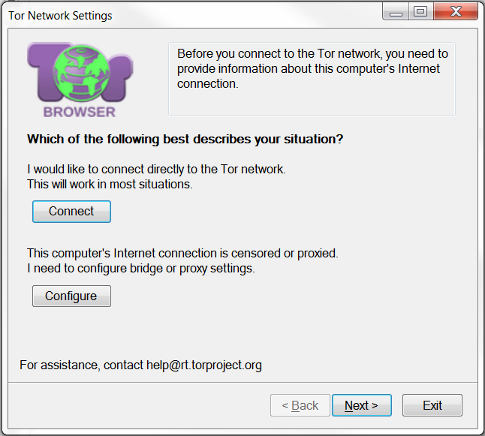
2) If you must configure a proxy then select "Yes" and enter the
details on the following page.
If you do not use a proxy then select "No" and click "Next".
If you do not know if you must configure a proxy then you likely
do not need to do it.
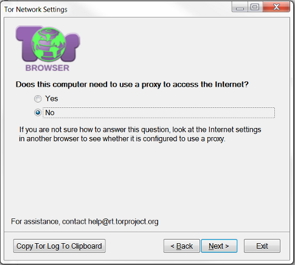
3) After you configure a proxy or skip over that configuration page, the following page asks "Does your Internet Service Provider (ISP) block or otherwise censor connections to the Tor Network?". Select "Yes" and then click "Next".
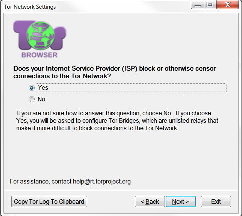
4) Now you have two configuration options. You can use bridges which are preconfigured and provided with Tor Browser, or you can specify your own bridge(s).
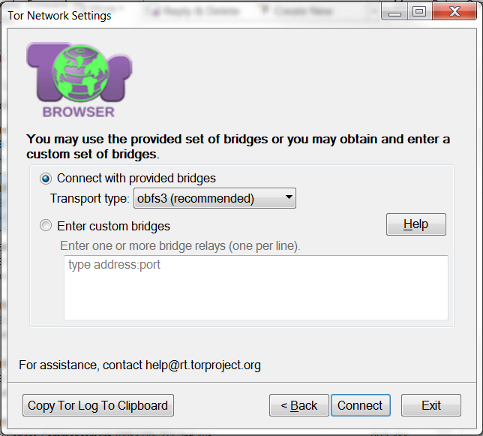
5a) If you want to use one of the provided bridges, then choose the transport type you want to use. obfs3 is currently the recommend type, but depending on where you are located another type may work better for you. If you have any questions, please contact us.
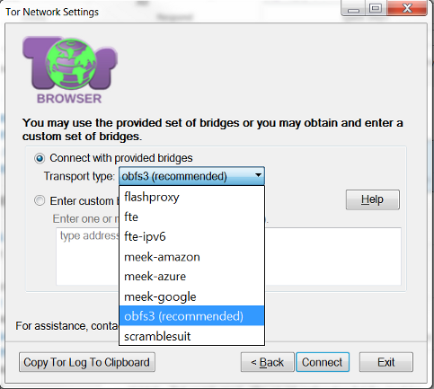
5b) Alternatively, if you want to use a custom bridge, then select "Enter custom bridges" and copy-and-paste the bridge information into the textbox.
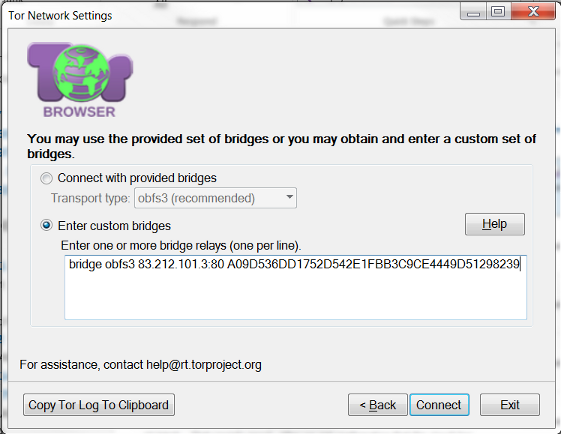
6) After you decide which bridges you want to use, click "Connect". Tor should now be able to load successfully and the browser window should appear.
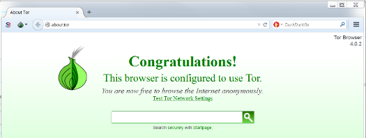
Adding bridges in Tor Browser when Tor does work:
The following instructions assume Tor Browser successfully loads and
you are able to surf the web. If you do not see the web browser when you
run Tor Browser (like in step (1) below), you may need to follow the
instructions above.
1) Start Tor Browser:
2) To begin using bridges, open Tor Browser's Network Settings:
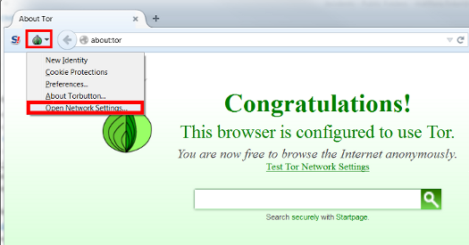
3) Select "My Internet Service Provider (ISP) blocks connections to the Tor network":
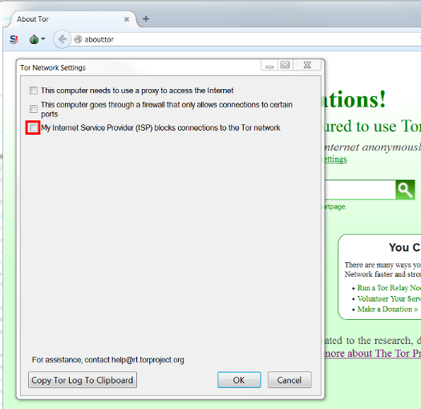
4) Now you have two configuration options. You can use bridges which are preconfigured and provided with Tor Browser, or you can specify your own bridge(s).
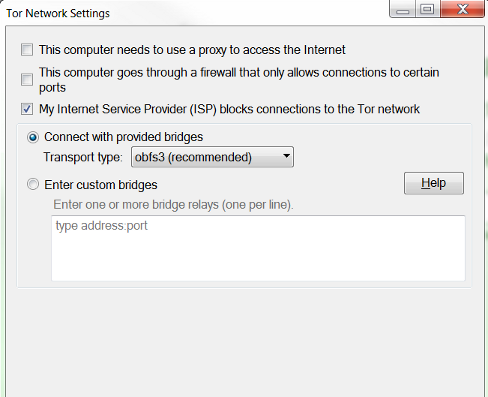
5a) If you want to use one of the provided bridges, then choose the transport type you want to use. obfs3 is currently the recommend type, but depending on where you are located another type may work better for you. If you have any questions, please contact us.
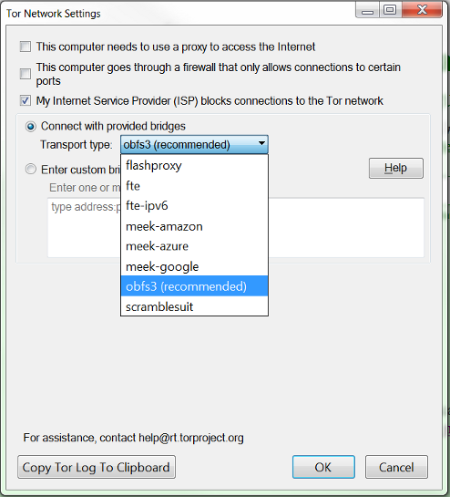
5b) Alternatively, if you want to use a custom bridge, then select "Enter custom bridges" and copy-and-paste the bridge information into the textbox.
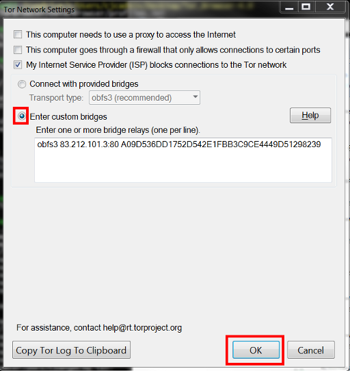
Tor will only use one bridge at a time, but it is good to add more than one bridge so you can continue using Tor even if your first bridge becomes unavailable.
Finding more bridges for Tor
If you need to get bridges, you can get a bridge by visiting https://bridges.torproject.org/ with your web browser.
You can also get bridges by sending mail to bridges@bridges.torproject.org with the line "get bridges" by itself in the body of the mail. You'll need to send this request from a Gmail, Riseup!, or Yahoo! account, though — we only accept these providers because otherwise we make it too easy for an attacker to make a lot of email addresses and learn about all the bridges. Almost instantly, you'll receive a reply that includes:
Here are your bridges:
60.16.182.53:9001
87.237.118.139:444
60.63.97.221:443
Similarly, if you need bridges with a specific pluggable transport, the process is just as easy. First, decide which type you want. Currently we provide obfs2, obfs3, scramblesuit, and fte. If you don't know which one you should choose, then obfs3 is usually a good choice. Send an email to bridges@bridges.torproject.org with "get transport obfs3" by itself in the body of the email (replace "obfs3" with whichever pluggable transport you want to use). You should receive an email like this:
Here are your bridges:
obfs3 60.16.182.53:9001 cc8ca10a63aae8176a52ca5129ce816d011523f5
obfs3 87.237.118.139:444 0ed110497858f784dfd32d448dc8c0b93fee20ca
obfs3 60.63.97.221:443 daa5e435819275f88d695cb7fce73ed986878cf3
Once you've received the email with bridge information, you can continue the configuration steps outlined above.
Running a Tor Bridge
If you want to help out, you should decide whether you want to run a normal Tor relay or a bridge relay. You can configure your bridge either manually or graphically:
- manually edit
your torrc file to be just these four lines:
SocksPort 0 ORPort auto BridgeRelay 1 Exitpolicy reject *:*
When configured as a bridge, your server will not appear in the public Tor network.
Your bridge relay will automatically publish its address to the bridge authority, which will give it out via https or email as above. You can construct the bridge address using the format above (you can find the fingerprint in your Tor log files or in /var/lib/tor/fingerprint depending on your platform).
If you would like to learn more about our bridge design from a technical standpoint, please read the Tor bridges specification. If you're interested in running an unpublished bridge or other non-standard uses, please do read the specification.
Tor Tip
Tor is written for and supported by people like you. Donate today!